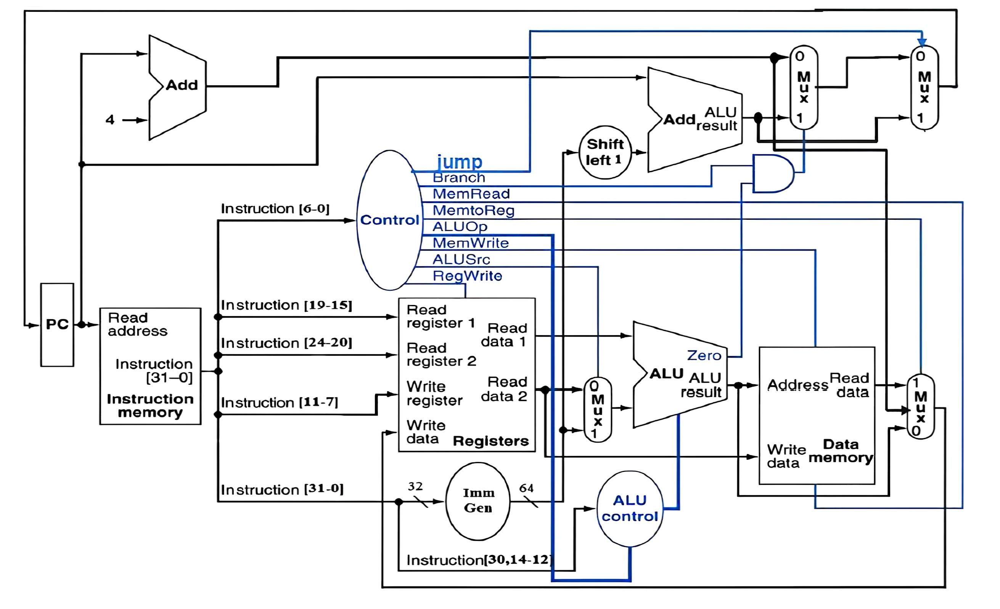

CPU
计算机体系结构¶
-
计算机体系结构
Computer Architecture problem algorithm program runtime systerm (VM,OS,MM) ISA (architecture) microarchitecture logic circuits electrons
Notice!
- VM（ 虚拟机，Virtual Machine ）
- OS（ 操作系统，Operating System ）
- MM（ 内存管理，Memory Management ）
- 冯诺伊曼架构
\[
\text{Computer}
\begin{cases}
\text{CPU} &
\begin{cases}
\text{Control unit} \\
\text{Datapath} &
\begin{cases}
\text{Path: multiplexors} \\
\text{ALU} \\
\text{Registers} \\
\text{……}
\end{cases}
\end{cases} \\
\text{Memory} \\
\text{I/O interface}
\end{cases}
\]
CPU¶
核心组成部分¶
- 数据通路：对数据执行操作
- 控制单元：对数据通路、内存等进行时序控制
- 高速缓存（cache memory）：一种小型快速的静态随机存取存储器（SRAM），用于快速访问数据
数据通路（Datapath）¶
-
ALU
Operation Function 000 And 001 Or 010 Add 110 Sub 111 Sit(比较) -
Memory（存储器）
- 指令存储器
- 只读
- 输入指令地址，输出相应指令
- 数据存储器
- 读写
- 由
MemRead和MemWrite控制
- 指令存储器
-
register files（寄存器堆）
- 由32个64 bit的寄存器组成
- 由D触发器实现
- 输入/输出
- 输入：两个5 bit的寄存器编号/一个5 bit的寄存器编号和一个64 bit的数据
- 输出：64 bit的数据
-
others：立即数生成单元
- 功能：
- 从指令中提取立即数
- 符号扩展
- 位移操作
- 功能：
性能（performance）¶
-
相关定义
- 响应时间（Latency）：任务从开始到完成的总时间（如程序运行时间）
-
吞吐量（Throughput）：单位时间内完成的任务量（如每秒处理的事务数）
Problem
- 替换更快的处理器：响应时间下降，吞吐量可能上升（若任务独立）
- 增加处理器数量：吞吐量上升（并行处理），但单任务响应时间可能不变
-
CPU时间 （用来衡量性能） = 用户CPU时间 + 系统CPU时间
- 时钟周期（Clock Period）：单个周期持续时间
- 时钟频率（Clock Rate）：每秒周期数
-
公式
\[Performance=\frac{1}{Execution Time(执行时间)}\]
\[CPU Time= Clock Cycles \times Clock Period = \frac{Clock Cycles}{Clock Rate}\]
| Text Only | |
|---|---|
1 2 3 4 5 | |
- 性能提高的方式
- 减少时钟周期数
- 提高时钟频率
- 硬件设计师常常需要在时钟频率和时钟周期数之间进行权衡
CPI（每条指令的平均周期数）¶
- 特点
- 由CPU硬件决定
- 不同指令可能有不同的CPI
- 平均CPI受指令组合的影响
- 公式
\[
CPI = \frac{CPU \ Clock \ Cycles}{Instruction \ Count}
\]
-
重要公式：
\[CPU \ Clock \ Cycles = Instruction \ Count \times Average \ Clock \ Cycles \ Per \ Instruction\]\[CPU \ Time = Instruction \ Count \times CPI \times Clock \ Period\]\[CPU \ Time = \frac{Instruction \ Count \times CPI}{Clock \ Rate}\]-
当不同指令类别执行所需的时钟周期数不同时，总时钟周期数（Clock Cycles）的计算方法为：
\[ Clock \ Cycles = \sum_{i = 1}^{n} (CPI_{i} \times Instruction \ Count_{i}) \] -
加权平均CPI的计算公式为：
\[ CPI = \frac{Clock \ Cycles}{Instruction \ Count} = \sum_{i = 1}^{n} \left( CPI_{i} \times \frac{Instruction \ Count_{i}}{Instruction \ Count} \right) \]
-
CPU design¶

数据通路¶
- 数据通路基本元素
- 寄存器组（Registers）
- 32 个 64 位寄存器（x0-x31）
- 两个读端口和一个写端口
- 写操作由时钟边沿触发，受RegWrite信号控制
- 算术逻辑单元（ALU）
- 加法（Add）、减法（Sub）、与（And）、或（Or）、小于置位（Slt）等操作
- 由ALU Op1和ALU Op0两位信号控制
- 输入：两个操作数（来源由ALUSrc信号决定：寄存器数据或立即数）
- 输出：结果及标志位（如 Zero）
- 存储器（Memory）
- 指令存储器（Instruction Memory）：只读，按地址读取指令
- 数据存储器（Data Memory）：读写由MemRead和MemWrite信号控制，支持按地址存取数据
- 立即数生成单元（Immediate Generation Unit）
- 根据指令类型生成对应立即数，并进行符号扩展至 64 位
控制器¶
- 控制信号
- ALU op
| 指令 | ALU op |
|---|---|
| ld | 00 |
| sd | 00 |
| beq | 01 |
| R-type | 10 |
| 信号名称 | 无效时（=0） | 有效时（=1） |
|---|---|---|
| RegWrite | 无 | 寄存器写入 |
| ALUSrc | ALU的第二个操作数来自第二个寄存器文件输出（读数据2） | ALU的第二个操作数来自立即数生成器 |
| Branch（PCSrc） | PC=PC+4 | PC跳转至分支目标地址（PC+立即数） |
| Jump | PC=PC+4或分支目标 | PC跳转至跳转地址 |
| MemRead | 无 | 读取数据存储器内容 |
| MemWrite | 无 | 将数据写入数据存储器 |
| MemtoReg（2位） | 00：写入寄存器的数据来自ALU | 写入寄存器的数据来自 01：数据存储器 10：PC+4 11：立即数生成器的输出 |
- 控制信号生成
- 主译码器（Main Decoder）
- 输入：7位操作码（Opcode）
- 输出：7个控制信号和2位ALU Op信号
- ALU 译码器（ALU Decoder）
- 输入：ALU Op和指令中的funct3、funct7
- 输出：具体ALU操作
- 主指令译码器真值表
| 输入 | 输出 | |||||||||
|---|---|---|---|---|---|---|---|---|---|---|
| Instruction | OPCode | ALUSrcB | Memto-Reg | Reg Write | Mem Read | Mem Write | Branch | Jump | ALU Op1 | ALU Op0 |
| R-format | 0110011 | 0 | 00 | 1 | 0 | 0 | 0 | 0 | 1 | 0 |
| Ld(I-Type) | 0000011 | 1 | 01 | 1 | 1 | 0 | 0 | 0 | 0 | 0 |
| sd(S-Type) | 0100011 | 1 | X | 0 | 0 | 1 | 0 | 0 | 0 | 0 |
| beq(SB-Type) | 1100111 | 0 | X | 0 | 0 | 0 | 1 | 0 | 0 | 1 |
| Jal(UJ-Type) | 1101111 | X | 10 | 1 | 0 | 0 | 0 | 1 | X | X |
| Jalr | 1100111 | 1 | 10 | 1 | 0 | 0 | 0 | 0 | 0 | 0 |
| lui | 0110111 | X | 11 | 1 | 0 | 0 | 0 | 0 | X | X |